k-Day 123｜青河縣博物館
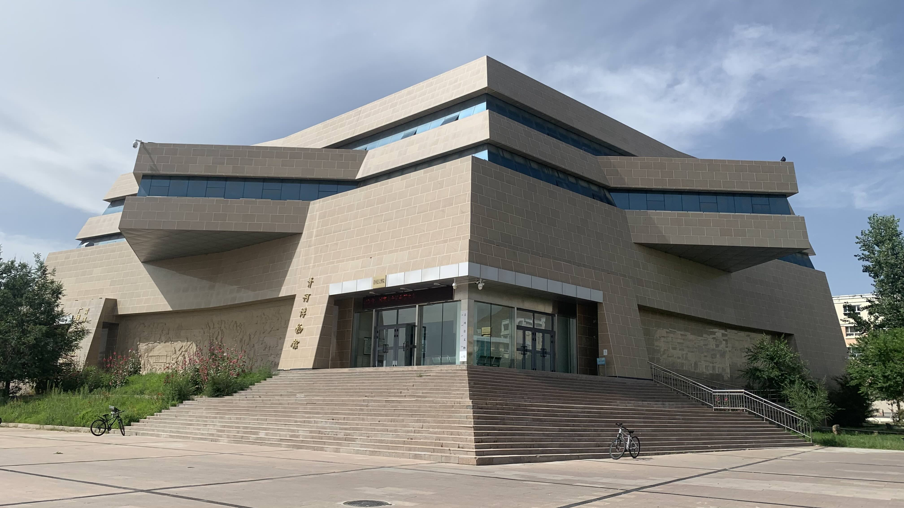
青河博物館離酒店是步行可達的距離，吃了午飯後悠閒散步過去。畢竟是地方博物館，看來有些冷清。
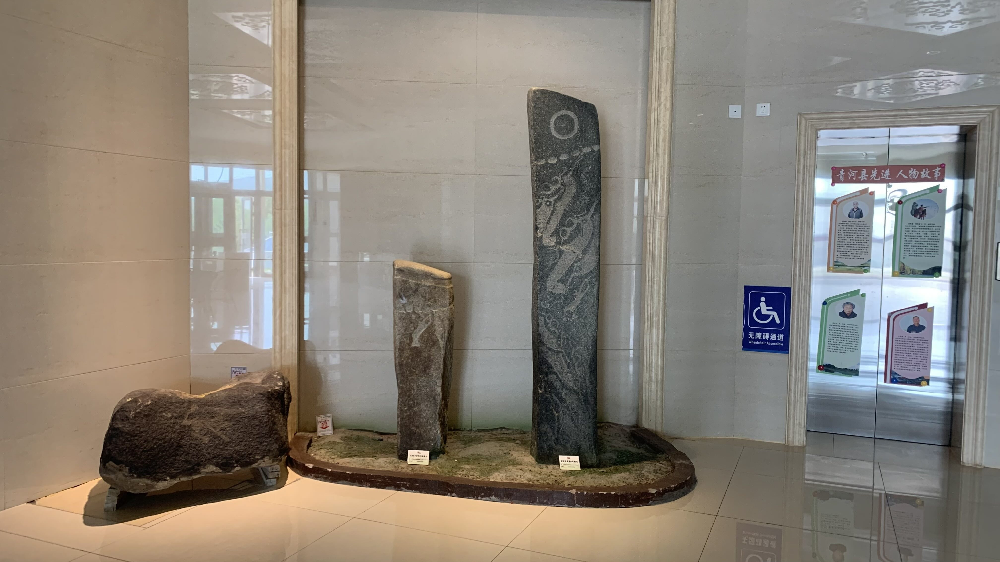
進門後就是大大的鹿石迎接，相當奢侈。
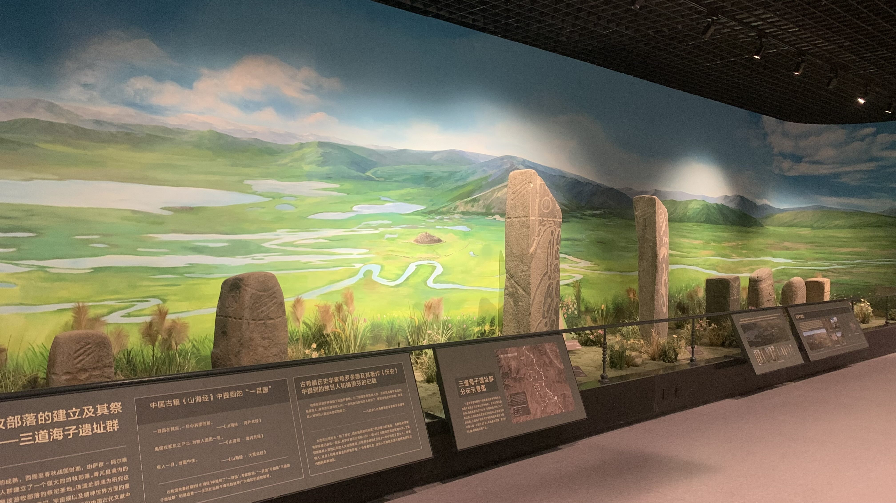
展廳按照年代排列，第二間就是鹿石和石人。和先前在蒙古經過的河谷鹿石不同，青河最有名的「三道海子」遺址在規模和數量上都是不可忽視的鹿石聚集地。三道海子在相當高的山上，據猜測，普通鹿石圍繞著墓葬石堆，而三道海子則可能乘載著古代遊牧民族祭祀的文化，也揪是這裡的鹿石是用來連接天地和世界的存在，因此在世界上都是相當被重視的。
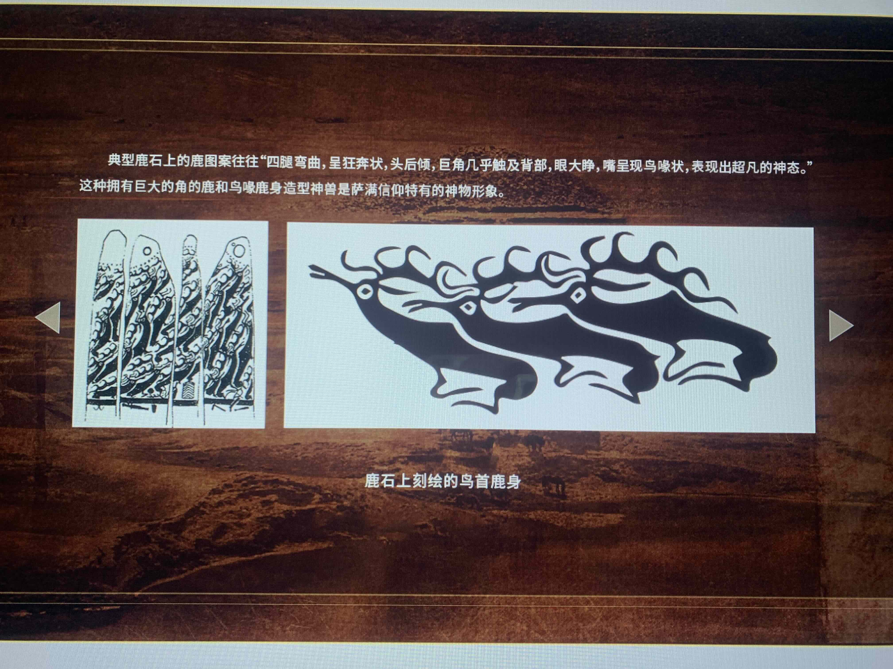
面對如此重要遺址，館方當然也做了互動螢幕供民眾了解世界上的鹿石分佈、差異與特色等等。
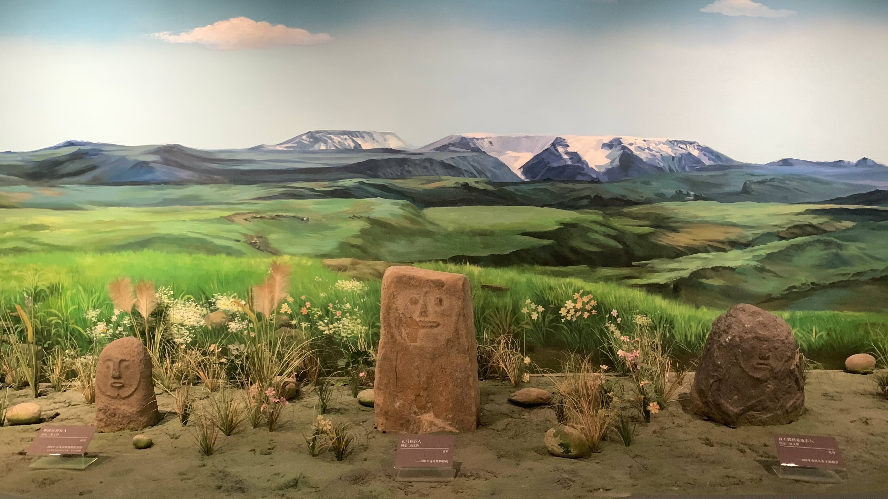
同樣出身青河的石人們就沒有這樣的待遇。按理說查干郭勒周遭出現的石人比起其他隋唐時代的石人長得更抽象，應該很受歡迎才是，但是為什麼特地把他們搬進博物館後，卻沒有好好為他們做些說明呢？
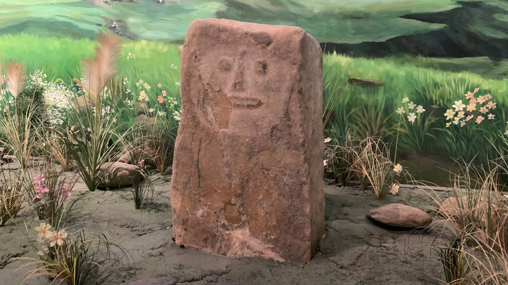
比如他叫「扎馬特石人」，曾經於某年某月在查干郭勒鄉西南處，查干河與扎馬特河匯集處被發現，當時測量身高約80公分，站在墓地東北側，面向東北。
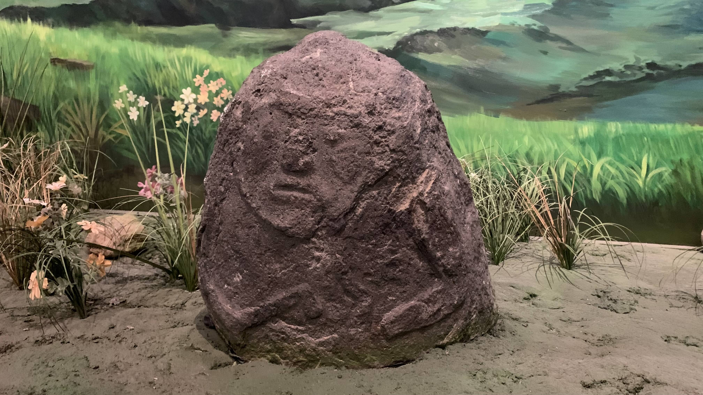
他叫「查干郭勒墓地石人」，原本位於鄉政府西北處，墓地有兩個石人，發現時一個已倒臥在草堆中。
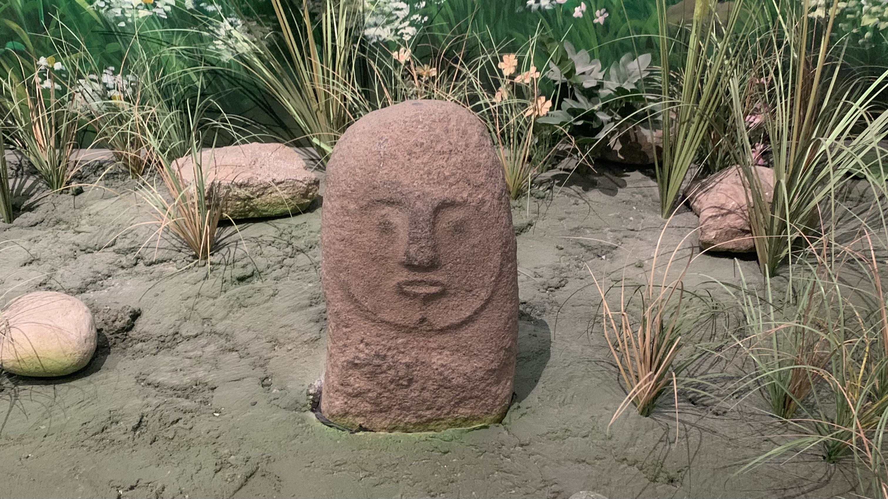
「喀拉沃愣石人」原本應該是在喀拉沃愣村吧，據當地人說那裡有一座隕石山。
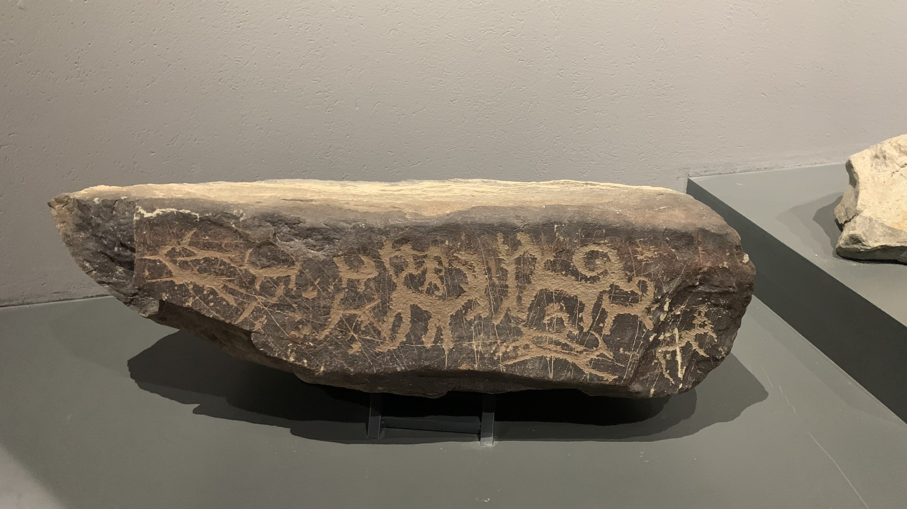
從查干郭勒鄉往三道海子的途中會經過岩畫遺跡，因此博物館裡當然也設置了一塊岩畫展示區。
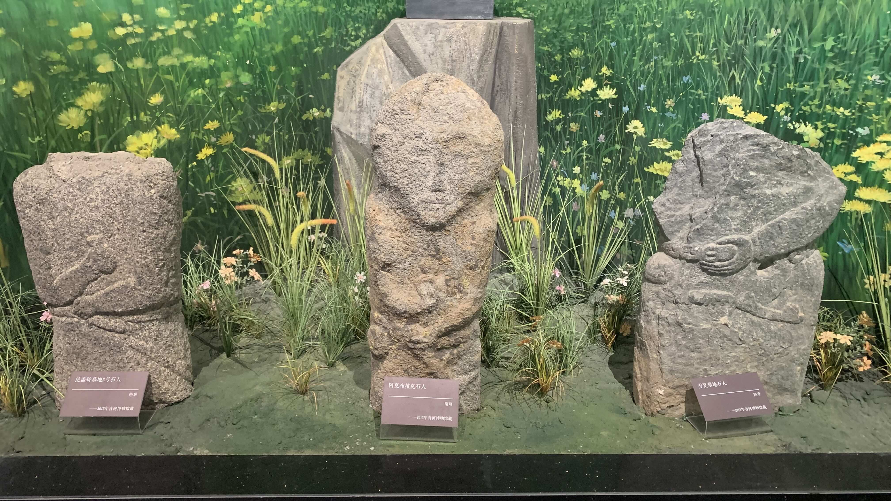
這些是長出身體穿上衣服的石人，手上拿的武器或酒杯已有了身份象徵。
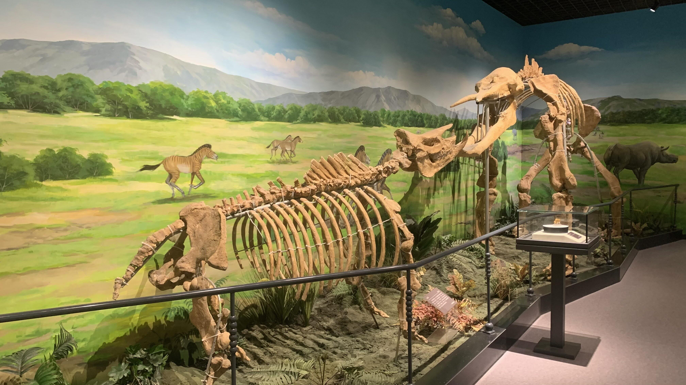
當然也有新疆的動物化石展示。
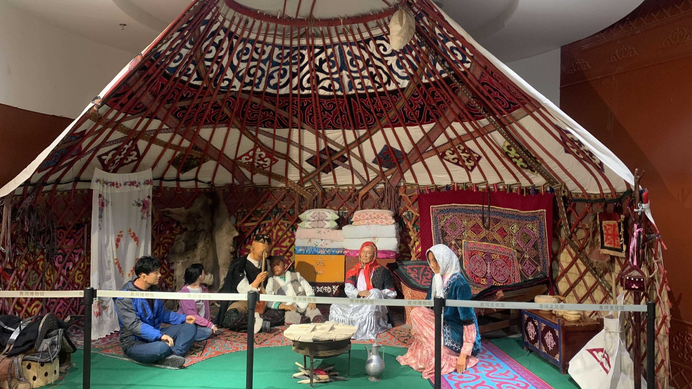
以及穿著現代登山服的男女坐在傳統蒙古包裡的景象，也許這不叫蒙古包，畢竟內裝和結構都不太相同，也屬於不同民族，但不確定有沒有確實的名稱。
博物館裡面還有許多動植物標本，當然還有些石器時代、近代文物展示，整體來說是相當值得造訪的。不知為啥整個展區只有我一個人。
明天週一，到移民局辦理邊境通行證後往南向烏魯木齊移動。
今日花費：午餐 48、6、晚餐 34.6、住宿 200元+蜜雪冰城 8、晚餐 53.6、零食 33.37